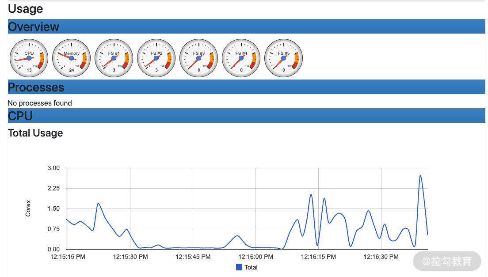
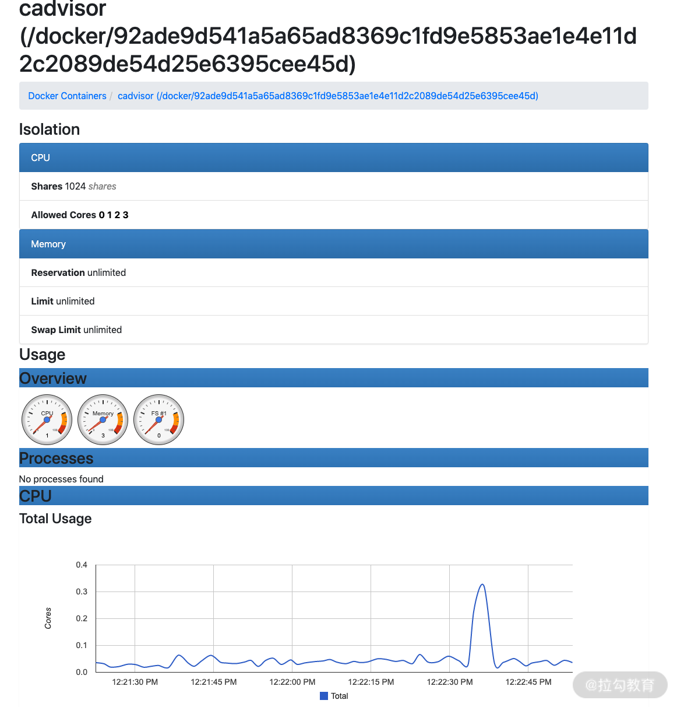

- 00 溯本求源，吃透 Docker！.md.html
- 01 Docker 安装：入门案例带你了解容器技术原理.md.html
- 02 核心概念：镜像、容器、仓库，彻底掌握 Docker 架构核心设计理念.md.html
- 03 镜像使用：Docker 环境下如何配置你的镜像？.md.html
- 04 容器操作：得心应手掌握 Docker 容器基本操作.md.html
- 05 仓库访问：怎样搭建属于你的私有仓库？.md.html
- 06 最佳实践：如何在生产中编写最优 Dockerfile？.md.html
- 07 Docker 安全：基于内核的弱隔离系统如何保障安全性？.md.html
- 08 容器监控：容器监控原理及 cAdvisor 的安装与使用.md.html
- 09 资源隔离：为什么构建容器需要 Namespace ？.md.html
- 10 资源限制：如何通过 Cgroups 机制实现资源限制？.md.html
- 11 组件组成：剖析 Docker 组件作用及其底层工作原理.md.html
- 12 网络模型：剖析 Docker 网络实现及 Libnetwork 底层原理.md.html
- 13 数据存储：剖析 Docker 卷与持久化数据存储的底层原理.md.html
- 14 文件存储驱动：AUFS 文件系统原理及生产环境的最佳配置.md.html
- 15 文件存储驱动：Devicemapper 文件系统原理及生产环境的最佳配置.md.html
- 16 文件存储驱动：OverlayFS 文件系统原理及生产环境的最佳配置.md.html
- 17 原理实践：自己动手使用 Golang 开发 Docker（上）.md.html
- 18 原理实践：自己动手使用 Golang 开发 Docker（下）.md.html
- 19 如何使用 Docker Compose 解决开发环境的依赖？.md.html
- 20 如何在生产环境中使用 Docker Swarm 调度容器？.md.html
- 21 如何使 Docker 和 Kubernetes 结合发挥容器的最大价值？.md.html
- 22 多阶级构建：Docker 下如何实现镜像多阶级构建？.md.html
- 23 DevOps：容器化后如何通过 DevOps 提高协作效能？.md.html
- 24 CICD：容器化后如何实现持续集成与交付？（上）.md.html
- 25 CICD：容器化后如何实现持续集成与交付？（下）.md.html
- 26 结束语 展望未来：Docker 的称霸之路.md.html
- 捐赠
08 容器监控：容器监控原理及 cAdvisor 的安装与使用
生产环境中监控容器的运行状况十分重要，通过监控我们可以随时掌握容器的运行状态，做到线上隐患和问题早发现，早解决。所以今天我就和你分享关于容器监控的知识（原理及工具 cAdvisor）。
虽然传统的物理机和虚拟机监控已经有了比较成熟的监控方案，但是容器的监控面临着更大的挑战，因为容器的行为和本质与传统的虚拟机是不一样的，总的来说，容器具有以下特性：
- 容器是短期存活的，并且可以动态调度；
- 容器的本质是进程，而不是一个完整操作系统；
- 由于容器非常轻量，容器的创建和销毁也会比传统虚拟机更加频繁。
Docker 容器的监控方案有很多，除了 Docker 自带的docker stats命令，还有很多开源的解决方案，例如 sysdig、cAdvisor、Prometheus 等，都是非常优秀的监控工具。
下面我们首先来看下，不借助任何外部工具，如何用 Docker 自带的docker stats命令实现容器的监控。
使用 docker stats 命令
使用Docker自带的docker stats命令可以很方便地看到主机上所有容器的 CPU、内存、网络 IO、磁盘 IO、PID 等资源的使用情况。下面我们可以具体操作看看。
首先在主机上使用以下命令启动一个资源限制为 1 核 2G 的 nginx 容器：
$ docker run --cpus=1 -m=2g --name=nginx -d nginx
容器启动后，可以使用docker stats命令查看容器的资源使用状态:
$ docker stats nginx
通过docker stats命令可以看到容器的运行状态如下：
CONTAINER CPU % MEM USAGE / LIMIT MEM % NET I/O BLOCK I/O PIDS
f742a467b6d8 0.00% 1.387 MiB / 2 GiB 0.07% 656 B / 656 B 0 B / 9.22 kB 2
从容器的运行状态可以看出，docker stats命令确实可以获取并显示 Docker 容器运行状态。但是它的缺点也很明显，因为它只能获取本机数据，无法查看历史监控数据，没有可视化展示面板。
因此，生产环境中我们通常使用另一种容器监控解决方案 cAdvisor。
cAdvisor
cAdvisor 是谷歌开源的一款通用的容器监控解决方案。cAdvisor 不仅可以采集机器上所有运行的容器信息，还提供了基础的查询界面和 HTTP 接口，更方便与外部系统结合。所以，cAdvisor很快成了容器指标监控最常用组件，并且 Kubernetes 也集成了 cAdvisor 作为容器监控指标的默认工具。
cAdvisor 的安装与使用
下面我们以 cAdvisor 0.37.0 版本为例，演示一下 cAdvisor 的安装与使用。
cAdvisor 官方提供了 Docker 镜像，我们只需要拉取镜像并且启动镜像即可。
由于 cAdvisor 镜像存放在谷歌的 gcr.io 镜像仓库中，国内无法访问到。这里我把打好的镜像放在了 Docker Hub。你可以使用 docker pull lagoudocker/cadvisor:v0.37.0 命令从 Docker Hub 拉取。
首先使用以下命令启动 cAdvisor：
$ docker run \
--volume=/:/rootfs:ro \
--volume=/var/run:/var/run:ro \
--volume=/sys:/sys:ro \
--volume=/var/lib/docker/:/var/lib/docker:ro \
--volume=/dev/disk/:/dev/disk:ro \
--publish=8080:8080 \
--detach=true \
--name=cadvisor \
--privileged \
--device=/dev/kmsg \
lagoudocker/cadvisor:v0.37.0
此时，cAdvisor 已经成功启动，我们可以通过访问 http://localhost:8080 访问到 cAdvisor 的 Web 界面。

图1 cAdvisor 首页
cAdvisor 不仅可以监控容器的资源使用情况，还可以监控主机的资源使用情况。下面我们就先看下它是如何查看主机资源使用情况的。
使用 cAdvisor 查看主机监控
访问 http://localhost:8080/containers/ 地址，在首页可以看到主机的资源使用情况，包含 CPU、内存、文件系统、网络等资源，如下图所示。

图2 主机 CPU 使用情况
使用 cAdvisor 查看容器监控
如果你想要查看主机上运行的容器资源使用情况，可以访问 http://localhost:8080/docker/，这个页面会列出 Docker 的基本信息和运行的容器情况，如下图所示。
图3 Docker 容器
在上图中的Subcontainers 下会列出当前主机上运行的所有容器，点击其中一个容器即可查看该容器的详细运行状态，如下图所示。

图4 容器监控状态
总体来说，使用 cAdvisor 监控容器具有以下特点：
- 可以同时采集物理机和容器的状态；
- 可以展示监控历史数据。
了解 Docker 的监控工具，你是否想问，这些监控数据是怎么来的呢？下面我就带你了解一下容器监控的原理。
监控原理
我们知道 Docker 是基于 Namespace、Cgroups 和联合文件系统实现的。其中 Cgroups 不仅可以用于容器资源的限制，还可以提供容器的资源使用率。无论何种监控方案的实现，底层数据都来源于 Cgroups。
Cgroups 的工作目录为/sys/fs/cgroup，/sys/fs/cgroup目录下包含了 Cgroups 的所有内容。Cgroups包含很多子系统，可以用来对不同的资源进行限制。例如对CPU、内存、PID、磁盘 IO等资源进行限制和监控。
为了更详细的了解 Cgroups 的子系统，我们通过 ls -l 命令查看/sys/fs/cgroup文件夹，可以看到很多目录：
$ sudo ls -l /sys/fs/cgroup/
total 0
dr-xr-xr-x 5 root root 0 Jul 9 19:32 blkio
lrwxrwxrwx 1 root root 11 Jul 9 19:32 cpu -> cpu,cpuacct
dr-xr-xr-x 5 root root 0 Jul 9 19:32 cpu,cpuacct
lrwxrwxrwx 1 root root 11 Jul 9 19:32 cpuacct -> cpu,cpuacct
dr-xr-xr-x 3 root root 0 Jul 9 19:32 cpuset
dr-xr-xr-x 5 root root 0 Jul 9 19:32 devices
dr-xr-xr-x 3 root root 0 Jul 9 19:32 freezer
dr-xr-xr-x 3 root root 0 Jul 9 19:32 hugetlb
dr-xr-xr-x 5 root root 0 Jul 9 19:32 memory
lrwxrwxrwx 1 root root 16 Jul 9 19:32 net_cls -> net_cls,net_prio
dr-xr-xr-x 3 root root 0 Jul 9 19:32 net_cls,net_prio
lrwxrwxrwx 1 root root 16 Jul 9 19:32 net_prio -> net_cls,net_prio
dr-xr-xr-x 3 root root 0 Jul 9 19:32 perf_event
dr-xr-xr-x 5 root root 0 Jul 9 19:32 pids
dr-xr-xr-x 5 root root 0 Jul 9 19:32 systemd
这些目录代表了 Cgroups 的子系统，Docker 会在每一个 Cgroups 子系统下创建 docker 文件夹。这里如果你对 Cgroups 子系统不了解的话，不要着急，后续我会在第 10课时对 Cgroups 子系统做详细讲解，这里你只需要明白容器监控数据来源于 Cgroups 即可。
监控系统是如何获取容器的内存限制的？
下面我们以memory 子系统（memory 子系统是Cgroups 众多子系统的一个，主要用来限制内存使用，Cgroups 会在第十课时详细讲解）为例，讲解一下监控组件是如何获取到容器的资源限制和使用状态的（即容器的内存限制）。
我们首先在主机上使用以下命令启动一个资源限制为 1 核 2G 的 nginx 容器：
$ docker run --name=nginx --cpus=1 -m=2g --name=nginx -d nginx
## 这里输出的是容器 ID
51041a74070e9260e82876974762b8c61c5ed0a51832d74fba6711175f89ede1
注意：如果你已经创建过名称为 nginx 的容器，请先使用 docker rm -f nginx 命令删除已经存在的 nginx 容器。
容器启动后，我们通过命令行的输出可以得到容器的 ID，同时 Docker 会在/sys/fs/cgroup/memory/docker目录下以容器 ID 为名称创建对应的文件夹。
下面我们查看一下/sys/fs/cgroup/memory/docker目录下的文件：
$ sudo ls -l /sys/fs/cgroup/memory/docker
total 0
drwxr-xr-x 2 root root 0 Sep 2 15:12 51041a74070e9260e82876974762b8c61c5ed0a51832d74fba6711175f89ede1
-rw-r--r-- 1 root root 0 Sep 2 14:57 cgroup.clone_children
--w--w--w- 1 root root 0 Sep 2 14:57 cgroup.event_control
-rw-r--r-- 1 root root 0 Sep 2 14:57 cgroup.procs
-rw-r--r-- 1 root root 0 Sep 2 14:57 memory.failcnt
--w------- 1 root root 0 Sep 2 14:57 memory.force_empty
-rw-r--r-- 1 root root 0 Sep 2 14:57 memory.kmem.failcnt
-rw-r--r-- 1 root root 0 Sep 2 14:57 memory.kmem.limit_in_bytes
-rw-r--r-- 1 root root 0 Sep 2 14:57 memory.kmem.max_usage_in_bytes
-r--r--r-- 1 root root 0 Sep 2 14:57 memory.kmem.slabinfo
-rw-r--r-- 1 root root 0 Sep 2 14:57 memory.kmem.tcp.failcnt
-rw-r--r-- 1 root root 0 Sep 2 14:57 memory.kmem.tcp.limit_in_bytes
-rw-r--r-- 1 root root 0 Sep 2 14:57 memory.kmem.tcp.max_usage_in_bytes
-r--r--r-- 1 root root 0 Sep 2 14:57 memory.kmem.tcp.usage_in_bytes
-r--r--r-- 1 root root 0 Sep 2 14:57 memory.kmem.usage_in_bytes
-rw-r--r-- 1 root root 0 Sep 2 14:57 memory.limit_in_bytes
-rw-r--r-- 1 root root 0 Sep 2 14:57 memory.max_usage_in_bytes
-rw-r--r-- 1 root root 0 Sep 2 14:57 memory.memsw.failcnt
-rw-r--r-- 1 root root 0 Sep 2 14:57 memory.memsw.limit_in_bytes
-rw-r--r-- 1 root root 0 Sep 2 14:57 memory.memsw.max_usage_in_bytes
-r--r--r-- 1 root root 0 Sep 2 14:57 memory.memsw.usage_in_bytes
-rw-r--r-- 1 root root 0 Sep 2 14:57 memory.move_charge_at_immigrate
-r--r--r-- 1 root root 0 Sep 2 14:57 memory.numa_stat
-rw-r--r-- 1 root root 0 Sep 2 14:57 memory.oom_control
---------- 1 root root 0 Sep 2 14:57 memory.pressure_level
-rw-r--r-- 1 root root 0 Sep 2 14:57 memory.soft_limit_in_bytes
-r--r--r-- 1 root root 0 Sep 2 14:57 memory.stat
-rw-r--r-- 1 root root 0 Sep 2 14:57 memory.swappiness
-r--r--r-- 1 root root 0 Sep 2 14:57 memory.usage_in_bytes
-rw-r--r-- 1 root root 0 Sep 2 14:57 memory.use_hierarchy
-rw-r--r-- 1 root root 0 Sep 2 14:57 notify_on_release
-rw-r--r-- 1 root root 0 Sep 2 14:57 tasks
可以看到 Docker 已经创建了以容器 ID 为名称的目录，我们再使用 ls 命令查看一下该目录的内容：
$ sudo ls -l /sys/fs/cgroup/memory/docker/51041a74070e9260e82876974762b8c61c5ed0a51832d74fba6711175f89ede1
total 0
-rw-r--r-- 1 root root 0 Sep 2 15:21 cgroup.clone_children
--w--w--w- 1 root root 0 Sep 2 15:13 cgroup.event_control
-rw-r--r-- 1 root root 0 Sep 2 15:12 cgroup.procs
-rw-r--r-- 1 root root 0 Sep 2 15:12 memory.failcnt
--w------- 1 root root 0 Sep 2 15:21 memory.force_empty
-rw-r--r-- 1 root root 0 Sep 2 15:21 memory.kmem.failcnt
-rw-r--r-- 1 root root 0 Sep 2 15:12 memory.kmem.limit_in_bytes
-rw-r--r-- 1 root root 0 Sep 2 15:21 memory.kmem.max_usage_in_bytes
-r--r--r-- 1 root root 0 Sep 2 15:21 memory.kmem.slabinfo
-rw-r--r-- 1 root root 0 Sep 2 15:21 memory.kmem.tcp.failcnt
-rw-r--r-- 1 root root 0 Sep 2 15:21 memory.kmem.tcp.limit_in_bytes
-rw-r--r-- 1 root root 0 Sep 2 15:21 memory.kmem.tcp.max_usage_in_bytes
-r--r--r-- 1 root root 0 Sep 2 15:21 memory.kmem.tcp.usage_in_bytes
-r--r--r-- 1 root root 0 Sep 2 15:21 memory.kmem.usage_in_bytes
-rw-r--r-- 1 root root 0 Sep 2 15:12 memory.limit_in_bytes
-rw-r--r-- 1 root root 0 Sep 2 15:12 memory.max_usage_in_bytes
-rw-r--r-- 1 root root 0 Sep 2 15:21 memory.memsw.failcnt
-rw-r--r-- 1 root root 0 Sep 2 15:12 memory.memsw.limit_in_bytes
-rw-r--r-- 1 root root 0 Sep 2 15:21 memory.memsw.max_usage_in_bytes
-r--r--r-- 1 root root 0 Sep 2 15:21 memory.memsw.usage_in_bytes
-rw-r--r-- 1 root root 0 Sep 2 15:21 memory.move_charge_at_immigrate
-r--r--r-- 1 root root 0 Sep 2 15:21 memory.numa_stat
-rw-r--r-- 1 root root 0 Sep 2 15:13 memory.oom_control
---------- 1 root root 0 Sep 2 15:21 memory.pressure_level
-rw-r--r-- 1 root root 0 Sep 2 15:21 memory.soft_limit_in_bytes
-r--r--r-- 1 root root 0 Sep 2 15:21 memory.stat
-rw-r--r-- 1 root root 0 Sep 2 15:21 memory.swappiness
-r--r--r-- 1 root root 0 Sep 2 15:12 memory.usage_in_bytes
-rw-r--r-- 1 root root 0 Sep 2 15:21 memory.use_hierarchy
-rw-r--r-- 1 root root 0 Sep 2 15:21 notify_on_release
-rw-r--r-- 1 root root 0 Sep 2 15:21 tasks
由上可以看到，容器 ID 的目录下有很多文件，其中 memory.limit_in_bytes 文件代表该容器内存限制大小，单位为 byte，我们使用 cat 命令（cat 命令可以查看文件内容）查看一下文件内容：
$ sudo cat /sys/fs/cgroup/memory/docker/51041a74070e9260e82876974762b8c61c5ed0a51832d74fba6711175f89ede1/memory.limit_in_bytes
2147483648
这里可以看到memory.limit_in_bytes 的值为2147483648，转换单位后正好为 2G，符合我们启动容器时的内存限制 2G。
通过 memory 子系统的例子，我们可以知道监控组件通过读取 memory.limit_in_bytes 文件即可获取到容器内存的限制值。了解完容器的内存限制我们来了解一下容器的内存使用情况。
监控系统是如何获取容器的内存使用状态的？
内存使用情况存放在 memory.usage_in_bytes 文件里，同样我们也使用 cat 命令查看一下文件内容:
$ sudo /sys/fs/cgroup/memory/docker/51041a74070e9260e82876974762b8c61c5ed0a51832d74fba6711175f89ede1/memory.usage_in_bytes
4259840
可以看到当前内存的使用大小为 4259840 byte，约为 4 M。了解了内存的监控，下面我们来了解下网络的监控数据来源。
网络的监控数据来源是从 /proc/{PID}/net/dev 目录下读取的，其中 PID 为容器在主机上的进程 ID。下面我们首先使用 docker inspect 命令查看一下上面启动的 nginx 容器的 PID，命令如下：
$ docker inspect nginx |grep Pid
"Pid": 27348,
"PidMode": "",
"PidsLimit": 0,
可以看到容器的 PID 为 27348，使用 cat 命令查看一下 /proc/27348/net/dev 的内容：
$ sudo cat /proc/27348/net/dev
Inter-| Receive | Transmit
face |bytes packets errs drop fifo frame compressed multicast|bytes packets errs drop fifo colls carrier compressed
lo: 0 0 0 0 0 0 0 0 0 0 0 0 0 0 0 0
eth0: 0 0 0 0 0 0 0 0 0 0 0 0 0 0 0 0
/proc/27348/net/dev 文件记录了该容器里每一个网卡的流量接收和发送情况，以及错误数、丢包数等信息。可见容器的网络监控数据都是定时从这里读取并展示的。
总结一下，容器的监控原理其实就是定时读取 Linux 主机上相关的文件并展示给用户。
结语
到此，相信你已经可以使用 docker stats 和 cAdvisor 监控并查看容器的状态了；也可以自己启动一个 cAdvisor 容器来监控主机和主机上的容器，并对监控系统的原理有了较深的了解。
© 2019 - 2023 Liangliang Lee. Powered by gin and hexo-theme-book.